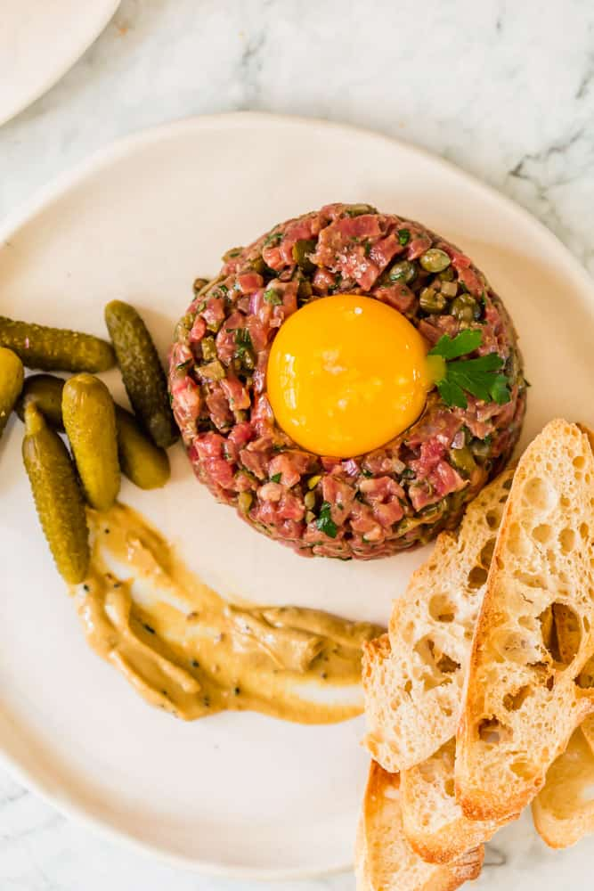

Steak

Description
Beef Tartare is a dish that uses super high quailty
meat in its raw form and is marinated in a special sauce
Ingredients:
- A5 Wagyu beef
- Soy Sauce
- Capers
- Dijon Mustard
- Egg Yolks
- Parsley
- Kosher Salt
Steps:
- Chop the capers
- Freeze the beef
- Cut the beef into 1/4 inch slices
- Mix soy sauce, capers, and beef into a bowl
- Form into a mold
- Add egg on top